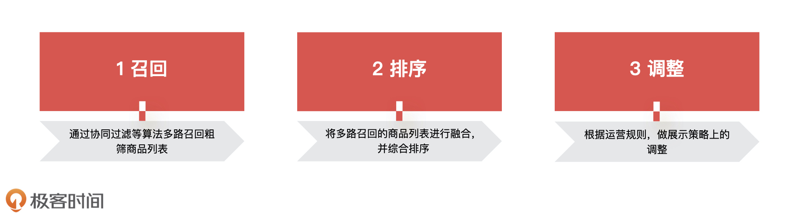
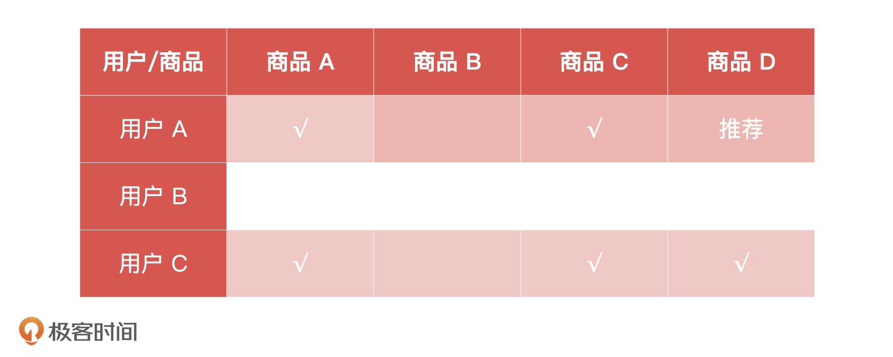
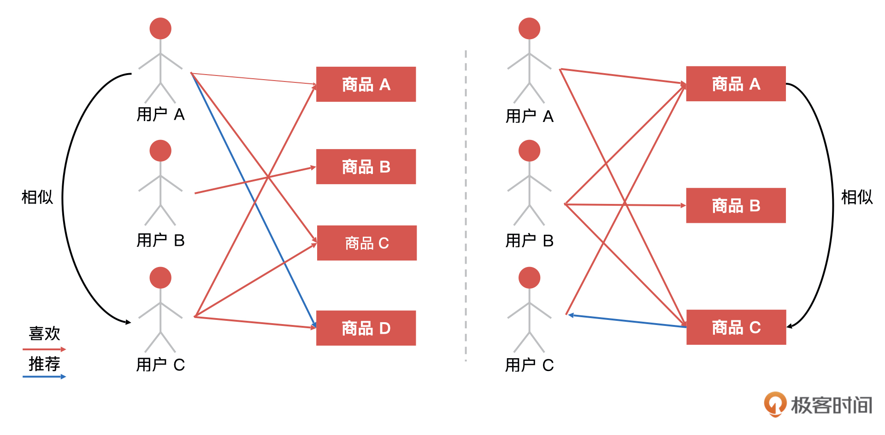
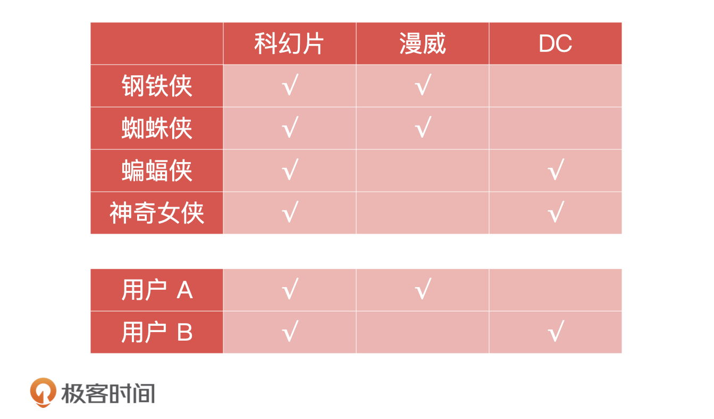
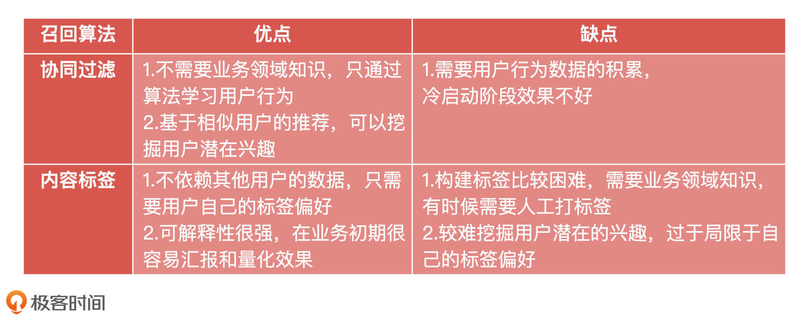
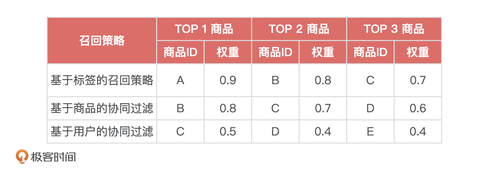

- 00 开篇词 你好，产品经理！你的未来价值壁垒在哪儿？.md.html
- 01 行业视角：产品经理眼中的人工智能.md.html
- 02 个人视角：成为AI产品经理，要先搞定这两个问题.md.html
- 03 技术视角：AI产品经理需要懂的技术全景图.md.html
- 04 过来人讲：成为AI产品经理的两条路径.md.html
- 05 通过一个 AI 产品的落地，掌握产品经理工作全流程.md.html
- 06 AI 模型的构建过程是怎样的？（上）.md.html
- 07 AI模型的构建过程是怎样的（下）.md.html
- 08 算法全景图：AI产品经理必须要懂的算法有哪些？.md.html
- 09 K近邻算法：机器学习入门必学算法.md.html
- 10 线性回归：教你预测，投放多少广告带来的收益最大.md.html
- 11 逻辑回归：如何预测用户是否会购买商品？.md.html
- 12 朴素贝叶斯：让AI告诉你，航班延误险该不该买？.md.html
- 13 决策树与随机森林：如何预测用户会不会违约？.md.html
- 14 支持向量机：怎么预测股票市场的涨与跌？.md.html
- 15 K-means 聚类算法：如何挖掘高价值用户？.md.html
- 16 深度学习：当今最火的机器学习技术，你一定要知道.md.html
- 17 模型评估：从一个失控的项目看优秀的产品经理如何评估AI模型？.md.html
- 18 核心技能：产品经理评估模型需要关注哪些指标？.md.html
- 19 模型性能评估（一）：从信用评分产品看什么是混淆矩阵？.md.html
- 20 模型性能评估（二）：从信用评分产品看什么是KS、AUC？.md.html
- 21 模型性能评估（三）：从股价预测产品看回归算法常用的评估指标.md.html
- 22 模型稳定性评估：如何用PSI来评估信用评分产品的稳定性？.md.html
- 23 模型监控：产品经理如何建设算法模型监控指标体系？.md.html
- 24 推荐类产品（一）：推荐系统产品经理的工作职责与必备技能.md.html
- 25 推荐类产品（二）：从0打造电商个性化推荐系统产品.md.html
- 26 预测类产品（一）：用户复购意向预测的底层逻辑是什么？.md.html
- 27 预测类产品（二）：从0打造一款预测用户复购意向的产品.md.html
- 28 预测类产品（三）：从0打造一款“大白信用评分产品”.md.html
- 29 自然语言处理产品：从0打造一款智能客服产品.md.html
- 30 AI产品经理，你该如何提升自己的价值？.md.html
- 31 AI产品经理面试，这些问题你必须会答！.md.html
- 春节加餐1 用户增长模型：怎么利用AI技术判断新渠道性价比？.md.html
- 春节加餐2 一次答疑，带你回顾模型评估的所有基础概念.md.html
- 期中周测试题 ，你做对了吗？.md.html
- 期中答疑 AI产品经理热门问题答疑合集.md.html
- 结束语 唯一不变的，就是变化本身！.md.html
- 捐赠
24 推荐类产品（一）：推荐系统产品经理的工作职责与必备技能
你好，我是海丰。
从这节课开始，我们进入AI项目实践篇的学习。这一模块，我们会一起打造三类 AI 产品，分别是推荐类产品、预测类产品、自然语言处理类产品。在接下来的两节课中，我们先来完成一个电商个性化推荐产品的打造。
一说到主导推荐系统的建设，很多产品同学就会有类似的疑问：推荐系统不是研发或者算法工程师来主导的吗？在牵头建设推荐系统的过程中，产品经理参与度不是很低吗，怎么去主导一个推荐系统的建设呢？我们到底应该做什么呢？
今天，我就结合我曾经实现过的商品推荐系统，来和你说说如何站在产品经理主导的角度来牵头建设推荐系统，下节课我们再一起搭建一个 MVP 推荐系统。
虽然推荐系统目前有很多不同的应用场景，比如，社交场景的内容信息流推荐，有电商场景的个性化商品推荐，还有地图场景的路径推荐等等，但是它们的底层逻辑是类似的。因此，只要你跟着我一起弄明白了商品推荐系统的原理，其他的也就不在话下了。
你的业务适合做推荐系统吗？
我想先问你一个问题，你觉得任何业务都适合做推荐系统吗？我认为不是的，做推荐系统需要在业务发展现阶段满足三个必要条件，分别是有货、有人、有场景。那它们具体指什么呢？我们一一来看。
有货就是要保证业务发展的现阶段供应链齐全，有足够的商品用于推荐，可以让用户“逛”起来，如果商品少到用人工就可以应付过来，那你觉还有推荐的必要吗？
而有人的意思是指，做推荐系统的前提是你的用户量要足够多，足够多的用户会带来足够多的用户行为，这些是推荐系统的数据和特征的来源。除此之外，有人还包括你得有合适的人才来做这件事儿，最完整的配比是“算法工程师 + 研发工程师 + 数据工程师 + 产品经理”，当然 MVP 的推荐系统通过研发工程师 + 产品经理也能搞定。
最后是有场景，做推荐系统要立足于业务的发展阶段。这很好理解，因为业务在发展初期阶段正忙于系统功能的建设，所以推荐系统这类偏前端流量玩法的工作的价值凸显不出来。也就是说，我们需要有合适的产品场景以及完善的系统，才能“接住”这样的需求。
因此，在推荐系统的建设上，你要考虑到人、货、场这三个因素。
拿我们部门举个例子，当我们要做推荐的系统时候，我们正处在用户高速增长的阶段，各条业务线产品的基础建设、供应链，以及用户体验都有了一定的积累和沉淀，业务发展战略的工作重心也逐渐从后台的基础建设，转移到了前台的用户流量运营。为了提高长尾商品的曝光率、挖掘用户潜在意图、优化用户体验，以达到提高购买转化率的目的，我才临时组建了推荐系统团队，去做一个基于旅行商品的个性化推荐系统。
推荐系统的工作流程
在了解了推荐系统的业务背景之后，我们有必要深入理解一下推荐系统工作流程和原理，这是从事个性化推荐相关工作的产品经理需要掌握的必备知识点。
推荐系统将一个物品/内容推荐给用户主要会经历三个步骤，即商品召回、商品排序和综合调整。

举个例子，如果你是一个女生，你在浏览京东商城的时候，可能会关注一些美妆品牌，收藏一些奢饰品包包或者加购一些零食。这一系列的行为反映了你对某些商品的偏好，此时推荐系统就会根据你的操作行为大致勾勒出你的兴趣偏好。
与此同时，推荐系统发现京东网站上还有很多与你兴趣偏好相似的用户，你们有着类似的喜好，她们喜欢的东西大概率你也会觉得不错。因此，推荐系统就会统计你们在京东商城的操作行为（如浏览、收藏、加购、下单），计算出你们之间的相似度，这样推荐系统就筛选出那些同类用户喜欢而你还没有接触过的商品。像这样推荐系统根据算法帮你初步筛选出你可能喜欢的商品的过程，叫做推荐系统的召回，你也可以把召回简单理解为商品的粗筛过程。
在召回的阶段中，有很多成熟的策略和算法供我们选择，比如基于用户行为的协同过滤召回算法，基于内容标签的召回算法，以及当今很火的基于深度学习的召回算法。但是，不管你选择哪一种召回算法，它们最终返回的结果都是一个商品列表。
一般来说，采用一个召回算法，我们只能得到一个商品列表，这对于一个个性化的推荐系统来说远远不够。因此在实际工作中，为了提高召回商品的覆盖率和多样性，我们往往会应用多种召回算法进行商品召回，这也叫做多路召回。
那么问题就来了，采用多路召回得到多个商品列表之后，我们该怎么对这些列表进行排序呢？
这时就进入了推荐系统的排序阶段。具体来说就是将召回阶段获取到的多个商品列表，结合多种因素进行考量（比如业务指标CTR、CVR、GMV、UV、已经商品的多样性、覆盖率等）融合成一个列表，并精细筛选出Top100甚至更少的商品列表。
不过，商品列表在被展示给用户之前，还需要经过一道调整的工序。其实就是对排序后的商品列表做运营策略上的调整，如广告坑位填充、特定商品置顶，这部分就和实际业务策略息息相关了。
在经过这三个步骤之后，推荐系统才能将最终的商品列表展示到用户页面。
到这里，我们已经学完 了什么样的业务适合做推荐系统，以及推荐系统的工作流程。接下来，就到了咱们这节课的重头戏：如何牵头建设一个推荐系统。刚才我们在讲推荐系统工作流程的时候，其实过程中的关键环节我们已经提到了，也就是召回阶段、排序阶段和调整阶段，而产品经理的工作核心就是把控好这些关键环节。
推荐系统产品经理的工作职责
为了帮助你理解，我们还是通过一个案例，来帮助你深入理解建设推荐系统过程中，产品经理的工作职责。
假设，你正在一家电商公司工作，部门领导让你牵头做一个推荐系统，它会应用在你们公司App“猜你喜欢”的页面中。当你拿到任务的第一时间，应该是明确推荐系统的整体架构与职责分工，这其实和大多数的产品设计初期并无二致。作为推荐系统的产品经理，当然不需要像算法工程师一样死磕算法模型，也不需要像研发工程师一样专注代码开发，那我们的工作职责到底是什么呢？
召回阶段的工作职责
在召回阶段，产品经理要对召回策略进行评估。实际工作中不需要产品经理设计召回策略，但你要了解常用召回策略的优缺点，以便根据实际场景做出合理的选择。
我们知道，召回就是对商品进行初步筛选，过滤出用户可能感兴趣的商品列表。之所以说“可能”是因为在召回这一步，为了提高覆盖率，我们通常会使用多个算法进行召回。在这些召回算法中，产品经理需要了解的召回算法有基于用户行为的协同过滤召回算法和基于内容标签的召回算法。下面，我们详细说一说。
我们先来看基于用户行为的协同过滤算法（User-based Collaborative Filtering）。 协同过滤的基本思想很简单，就是基于用户对商品的偏好找到和用户最相近的一批人，然后把这批人喜欢的商品推荐给当前用户。
比如说，现在有三个用户，分别是用户 A、用户 B 和用户 C，以及四个商品，分别是商品 A、商品 B、商品 C 和商品 D。我们对三个用户的行为进行分析，发现用户A喜欢商品 A 和 C，用户 B 喜欢商品 B，用户 C 喜欢商品 A、C 和 D，我们把这些信息整理到一个表格中。

通过这个表格，我们能很直观地看到，用户 A 和用户 C 都喜欢商品 A 和商品 C。由此，我们可以猜测用户 A 和用户 C 的兴趣偏好可能相同。这个时候，我们就可以把商品 D 推荐给用户A。
这就是协同过滤策略的基本原理，在算法的实现上就是将用户对商品的操作行为，如浏览、收藏、加购和下单，变成向量形式的数学表达方式，然后通过相似度算法，常见地有通过余弦相似度算法计算这些行为的相似度，最后得出一个相似度分数的排序。这样，就能找到和你行为最相近的其他用户，并过滤出他们喜欢而你没有接触过的商品。
通过相似度计算，我们可以得到和某个用户最相似的其他用户的一个列表。举一反三，我们就能得出和某个商品最相似的一个商品列表。

那你可能想问了，协同过滤算法看起来就不简单，产品经理到底要掌握到什么程度呢？
产品经理不需要掌握如何实现协同过滤算法，但是需要理解它的原理。协同过滤算法需要有用户行为数据作为基础，才能根据行为计算用户之间的相似度以及商品之间的相似度，在系统冷启动阶段很难实施，所以在冷启动阶段，我们还需要考虑其他的召回策略，比如我接下来要说的基于内容标签的召回策略。
基于内容标签的召回算法（Content-based Recommendations，CB）是最早被使用的召回算法，在现在的工业界中仍然被广泛使用，因为它的效果很好。它的基本思想就是给用户和商品分别打标签，然后召回同类标签的商品，最终把它们推荐给用户。
比如说，现在有两个用户，分别是用户 A 和用户 B，还有四部电影，分别是《钢铁侠》《蜘蛛侠》《蝙蝠侠》和《神奇女侠》。我们给每部电影打上标签，《钢铁侠》是“科幻片”和“漫威”，《蜘蛛侠》是“科幻”和“漫威”，《蝙蝠侠》是“科幻片”和“DC”，《神奇女侠》是“科幻片”和“DC”。为了方便你理解，我简化了标签的数量，在实际工作中，我们可能会给每一个电影打上几十甚至是几百个标签。
给电影打完标签之后，我们还要给每一个用户打上兴趣偏好标签，如用户 A 刚看完《钢铁侠》，就给用户 A 打上“科幻片”和“漫威”的标签，用户 B 看过《蝙蝠侠》，就给用户 B 打上“科幻片”和“DC”的标签，我们把这些信息都整理到了下面的表格中，你可以看看。
- 通过这个表格，我们能很直观地看到，用户 A的偏好标签为“科幻片”“漫威”，正好和《钢铁侠》《蜘蛛侠》的标签相同。很显然，我们应该把《蜘蛛侠》推荐给用户 A，再把《神奇女侠》推荐给用户 B。
这就是内容标签召回算法的基本原理，具体的算法实现就是将用户的偏好标签和电影的标签，变成向量形式的数学表达方式，然后通过相似度算法，常见地会通过余弦相似度算法，去计算这些行为的相似度，最后得出一个相似度分数的排序。这样，我们就能找到和用户偏好最相似的TopN部电影了。
到这里，两种最常见的召回算法我们就讲完了。这两个召回算法作为推荐系统产品经理是必须要了解和掌握的。为了帮助你在实际工作中进行选择和评估，我把这两种算法的优缺点总结在了下面。

排序阶段的工作职责
知道了产品经理在召回阶段需要具备的能力和工作职责。下面，我们继续来看看，产品经理在排序阶段需要掌握哪些内容。
在推荐系统的排序环节中，产品经理要以目标为导向来确定排序的目标。如果产品是以提高 CTR 为目标，那么推荐系统可以使用 CTR（Click-Through Rate，点击率）预估的方式来构建排序模型，根据用户历史的浏览记录，来预测用户的点击行为。
但在电商场景中，还存在 CVR、GMV、UV 等多个核心指标，所以产品规则并不是一个指标所能决定的，要根据业务目标来优化排序模型。也就是说，如果公司追求的是 GMV，那么单纯地提升 CTR ，在一定程度上只能代表着用户体验的提升。
当然，你可以把这些指标的诉求抛给算法工程师，让算法同学给出 CTR 或 CVR 预估的方案。这个时候，你需要关注的就是如何评估算法同学交付的算法模型的性能和稳定性。
但是由于冷启动阶段用户个性化和行为化特征过少，如果我们把评估的重心定位在“针对用户的精准化预测”就是不合理的。这个时候，你可以让算法工程师给出冷启动阶段的排序模型，如果没有更优的方案，你也可以给出一套打分策略来进行商品列表的排序融合，这也是面向策略的产品经理必须要具备的能力。
下面我再通过一个例子，来讲解一下排序阶段几种常见的排序策略。假如，我们使用了3种召回策略，分别得到了3个商品列表，以及每个商品所在列表中的评分。

这个时候有3种排序策略可以供我们参考，它们分别是加权平均法、CTR 动态加权平均法和CTR 预估加权平均法。接下来，我们就按照实现复杂度从易到难的顺序一一来看。
首先是加权平均法，我又叫它综合加权平均法。 加权平均法是统计领域内常用来综合指标的基本方法，它的计算方法最简单。以商品A为例，我们根据专家经验，预先定义三种召回策略的权重：0.4、0.3、0.2，然后结合上面的评分列表，让商品的权重分别乘上每一种策略的权重，再除以策略权重之和，就能得到商品的评分。那么，商品A的评分就是：\(\\left(0.9^{\\star} 0.4+0^{\\star} 0.3+0^{\\star} 0.2\\right) /(0.4+0.3+0.2)=0.4\)。同理，我们能够得到其他商品的评分，按照字母顺序分别是0.62、0.66、0.29、0.09。
最终，根据分数排序，我们可以得到：C>B>A>D>E。这种排序策略的特点简单明确，每种排序策略可以根据业务规则预设权重。
接着，我们来看CTR 动态加权平均法。 使用这种方法，我们需要每天离线计算三种召回策略的 CTR，把它们作为每天更新的动态权重，最终根据动态的权重做加权平均。CTR 动态加权平均法可以看成是加权平均法的一种改进，每种召回策略的 CTR =每种召回源的点击数 / 每种召回源的展现数。
最后，我们再来看CTR 预估加权平均法。 它是通过 CTR 预估三种召回策略的权重，然后做加权平均。因为需要用到前两种方法，所以它的实现方法是最复杂的。
这些排序算法实现起来虽然有的简单、有的复杂，但它们没有优劣之分，只有适不适合，所以每一种我们都要掌握。除此之外，我们也要立足于自己所处的业务场景和业务下阶段的发展战略，来选择冷启动阶段的排序策略。
好了，推荐系统最核心的两个环节，召回和排序我们就讲完了。作为一个完整的推荐系统，它还要包括最后的调整的步骤，产品经理要与业务和运营人员充分沟通，以及结合实际的业务场景，把如广告商品、流量坑位、特殊扶持等相关的运营策略结合到推荐系统中。
因此，产品经理还有一个非常重要的工作职责，那就是评估一个推荐系统的好坏。
推荐系统的评估
评估一个推荐系统有很多指标，比如准确率、召回率、覆盖率、多样性、体验度等等。这些指标看起来多，但是常用的有4个。
首先是准确率，它用来判断模型预测的商品列表有多少是用户感兴趣的。举个例子，我们认为用户点击该商品，就表示用户对其感兴趣。通过推荐系统，我们给用户推荐了10个商品，其中用户点击了5个商品，那么，推荐系统的准确率就是5/10=50%
其次是召回率，即用户感兴趣的商品有多少是模型预测出来的商品。举个例子，用户一共点击 了10个商品，其中有8个是通过推荐系统推送给用户的，那么推荐系统的召回率就是8/10=80%
然后是覆盖率，是说推荐系统可以覆盖到多少用户，或者说推荐系统可以给多少用户进行商品推荐。假设我们有1000万的旅行用户，推荐系统可以为其中900万用户进行推荐，那么覆盖率就是900/1000=90%
最后是多样性，推荐系统为用户推荐商品的类型应该保持多样性。这怎么理解呢？ 我们会发现，如果我们在某电商平台购买了薯片，这个电商平台后续就会一直给我们推荐薯片或者薯条产品。从短期来看，这种推荐结果有助于提高用户转化，但从长期来看，它牺牲了用户的整体体验。因此，我们在保证短期收益的基础上也要考虑长期的用户体验。
除了上面比较通用的评估指标外，产品经理还需要根据业务现状提出预期收益，大多数的推荐系统衡量指标都是CTR，但是我不建议你直接使用这个指标来定义预期收益。你可以从业务的建设阶段来设定收益指标，我在下面给出了业务发展的三个阶段，提出推荐系统的预期收益的一般方法，你可以作为参考：
- 对于业务建设阶段，可以从流量的增长入手，比如以DAU、MAU为核心指标衡量业务的增长；
- 对于业务发展阶段，可以从流量的转化入手，比如以CTR、CVR为核心指标衡量流量的转化率；
- 对于业务成熟阶段，可以从GMV入手，比如以UV价值、RPM等为核心指标衡量用户价值。
小结
今天，我们讲了推荐系统的工作流程，以及产品经理在推荐系统中需要具备的能力和工作职责。为了帮助你理解和记忆，我总结了一张思维导图，放在了下面。

除此之外，我还想再和你强调一下，作为产品经理，我们要重点掌握推荐系统各个环节的工作内容，每个环节用到了哪些技术，以及它们的原理。通过理解它们，来进一步掌握建设推荐系统时一个优秀产品经理必备的能力和工作职责。
课后讨论
如果立足于你现在的业务场景，让你牵头建设一个推荐系统，你觉得对你来说最大的挑战是什么？
欢迎把你的答案写到留言区和我一起讨论，我们下节课见！
© 2019 - 2023 Liangliang Lee. Powered by gin and hexo-theme-book.